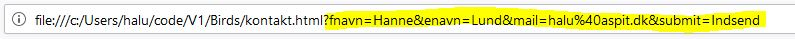

HTML formularer indeholder et overordnet <form> tag. Inden i selve formularområdet placerer man de forskellige formular-felter. Herudover skal din formular indeholde en submit-knap, som indsender formular-indholdet og videredirigerer en til en evt. landingsside (eller reloader den nuværende side, som formularen ligger på).
Du opretter en ny formular ved at skrive:
<form method="post" action="formlandingpage.html">
</form>
I attributten action skrives navnet på den side, som man skal ledes videre til, når man har trykket på sin Submit-knap. I attributten method skrives enten "post" eller "get".
De to metoder "post" og "get" adskilles ved, hvordan den næste side vises. Hvis man bruge metoden "get", så vil alle formularfelterne og deres indhold blive vist i den næste sides URL:
Hvis man bruger "post" metoden, så vil formularfelterne og deres indhold ikke blive vist i den næste sides URL. Med mindre du har en meget god grund til, at man skal kunne se, hvad brugerne har indtastet i formularfeltet, så er det en god idé at gemme, hvad brugerne har indtastet, så du skal i næsten alle tilfælde bruge metoden "post". Hvis du ikke skriver nogen metode ind, så bruger den som default metoden "get", så du skal huske at skrive metoden ind, hvis du skal bruge "post".
Nogle af de mest brugte formular-felter i almindelige formularer er: tekstfelter, dropdown bokse, tekstområder og submit-knappen.
Alle formularfelter skal have udfyldt deres name-attribut. Hvis der ikke er en name-attribut på hvert formularfelt, så virker det ikke. Du angiver navnet på formularfeltet ved at skrive name="feltnavn" i feltets HTML-tag. Se eksempler nedenfor.
Et tekstfelt (tekst på en linje) skrives <input type="text" name="fornavn">
Feltet her hedder "fornavn", så på den måde kan man altid henvise til lige præcis dette felt, hvis man har brug for det.
Udover at være type="text" kan et input felt også være type="email", så bliver brugerens indtastning også valideret på, om det har et korrekt mail-format.
Det kan også være type="password", så bliver brugerens indtastning skjult.
Det kan også være type="date", så får brugeren en kalender op, som de kan vælge datoen i.
Der er adskillige andre input typer, som kan anvendes, men som ikke bliver brugt så tit. Du kan læse mere om input typer på w3schools.
Et tekstområde (tekst med flere linjer) skrives: <textarea>
Du kan også angive hvor mange kolonner og linjer, tekstfeltet skal være (tekstfeltets størrelse) med cols og rows:
<textarea cols="50" rows="4">
Størrelsen på tekstfeltet kan også angives i din CSS, hvis du styler på din textarea-selector.
En dropdown-box skrives med HTML-tagget <select>
Herudover skal dropdown-boksen også have et navn: <select name="kategori">
En dropdown-box skal altid afsluttes med et </select> og imellem de to select-tags skrives alle de værdier, som skal ligge i dropdown boksen.
<select name="kategori">
<option value="salg">Salg</option>
<option value="support">Support</option>
<option value="abonnement">Abonnement</option>
<option value="andet">Andet</option>
</select>
Attributten value indeholder den værdi, som bliver overført, når din formular bliver submittet. Det, der står imellem de to option tags er det, som brugeren kan se i dropdown-boksen.
Submit knappen
Din formular skal indeholde en submit-knap. Det er submit-knappen, der indsender formularen og sender brugeren videre til den landingsside, som du har angivet i din action-attribut i dit form-tag. Hvis du ikke har angivet en landingsside, så bliver den side, som formularen ligger på, reloadet.
Du skriver din submitknap på følgende måde: <input type="submit" value="Indsend" name="submit">
Attributten type angiver, at dette er en submit-knap. Attributten value angiver, hvad der står på submit-knappen, som brugeren kan se. Attributten name er navnet på formular-elementet.
Felt labels
Man kan angive labels til sine formularfelter ved blot at skrive navnet i almindelig HTML-kode. Det er dog et bedre valg at bruge HTML-tagget <label>, fordi det gør, at skærmlæsere ved, at label'en hænger sammen med et bestemt formularfelt, og det gør din side mere tilgængelig for flere brugere (også dem, der bruger skærmlæsere).
Du sætter en label ind for et felt ved at angive navnet på dit formularfelt i din label. Imellem dit start og slut label-tag, skriver du det, som brugerne skal kunne se på skærmen:
<label for="fornavn">Fornavn:</label>
<input type="text" name="fornavn">
Andre attributter
Required
Du kan angive at et formularfelt skal udfyldes ved at bruge attributten required:
<input type="email" required>
Det giver bl.a. en stjerne ved siden af feltet, og brugeren får en fejl, hvis feltet ikke er udfyldt, når brugeren trykker på submit-knappen.
Disabled
Du kan angive, at et formularfelt er disabled (vises som greyed out) ved at bruge attributten disabled:
<input type="kundenr" disabled>
Placeholder
Med placeholder kan du angive en eksempel-værdi, som vil stå i feltet, når brugeren kommer ind på siden. Så snart brugeren sætter sin cursor i feltet, forsvinder placeholderen. Placeholderen kan hjælpe brugeren med at forstå, hvad man skal skrive i feltet:
<input type="email" name="mail" placeholder="name@mail.dk">
Flere attributter
På w3schools kan du se flere attributter, som kan angives på dine input felter.
Videre med dit fugleleksikon
Gå videre med de opgaver, som står under "Opgaver som laves, når du har læst siden HTML formularer".